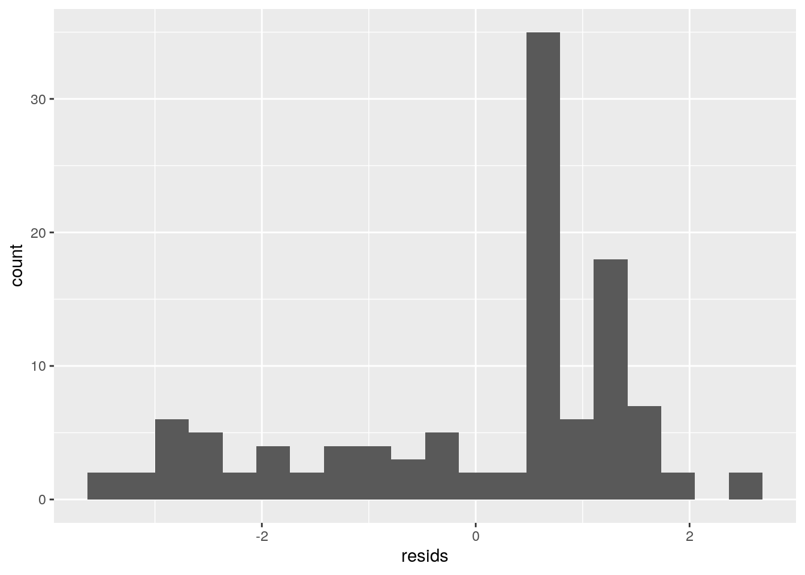

January 1, 0001
Modeling, Testing, and Predicting
Introduction
I am going to be using the aSAH dataset, which summarizes several clinical and one laboratory variable of 113 patients with an aneurysmal subarachnoid hemorrhage The variables are defined as: NDKA:Nucleoside diphosphate kinase A wfn: World Federation of Neurological Surgeons, uses the Glasgow Coma Scale and presence of focal neurological deficits to grade the clinical severity of subarachnoid hemorrhage. grade 1: GCS 15, no motor deficit. grade 2: GCS 13-14 without deficit grade 3: GCS 13-14 with focal neurological deficit grade 4: GCS 7-12, with or without deficit. grade 5: GCS <7 , with or without deficit. s100b: S100 calcium-binding protein B (S100B) gos6: Glasgow Outcome Score GOS score 1–3= unfavorable, favorable outcome= GOS score 4–5
library(pROC)## Type 'citation("pROC")' for a citation.##
## Attaching package: 'pROC'## The following objects are masked from 'package:stats':
##
## cov, smooth, vardata(aSAH)
head(aSAH)## gos6 outcome gender age wfns s100b ndka
## 29 5 Good Female 42 1 0.13 3.01
## 30 5 Good Female 37 1 0.14 8.54
## 31 5 Good Female 42 1 0.10 8.09
## 32 5 Good Female 27 1 0.04 10.42
## 33 1 Poor Female 42 3 0.13 17.40
## 34 1 Poor Male 48 2 0.10 12.75MANOVA
library(rstatix)##
## Attaching package: 'rstatix'## The following object is masked from 'package:stats':
##
## filterman1<-manova(cbind(ndka,s100b,age)~outcome, data=aSAH)
summary(man1)## Df Pillai approx F num Df den Df Pr(>F)
## outcome 1 0.19712 8.9205 3 109 2.452e-05 ***
## Residuals 111
## ---
## Signif. codes: 0 '***' 0.001 '**' 0.01 '*' 0.05 '.' 0.1 ' ' 1summary.aov(man1)## Response ndka :
## Df Sum Sq Mean Sq F value Pr(>F)
## outcome 1 4573 4573.1 2.8748 0.09278 .
## Residuals 111 176571 1590.7
## ---
## Signif. codes: 0 '***' 0.001 '**' 0.01 '*' 0.05 '.' 0.1 ' ' 1
##
## Response s100b :
## Df Sum Sq Mean Sq F value Pr(>F)
## outcome 1 1.4494 1.44940 23.498 4.094e-06 ***
## Residuals 111 6.8466 0.06168
## ---
## Signif. codes: 0 '***' 0.001 '**' 0.01 '*' 0.05 '.' 0.1 ' ' 1
##
## Response age :
## Df Sum Sq Mean Sq F value Pr(>F)
## outcome 1 955.7 955.71 5.1521 0.02515 *
## Residuals 111 20590.2 185.50
## ---
## Signif. codes: 0 '***' 0.001 '**' 0.01 '*' 0.05 '.' 0.1 ' ' 1A one-way MANOVA was conducted to determine the effect of the Outcome (Good, Poor) on two dependent variables (ndka,s10b, and age). Significant differences were found among the two outcomes for at least one of the dependent variables. Univariate ANOVAs for each dependent variable were conducted as follow-up tests to the MANOVA, using the Bonferroni method for controlling Type I error rates for multiple comparisons. The univariate ANOVAs for s100b and age were also significant, 0.000004 , and, 0.0251, respectively.
library(dplyr)##
## Attaching package: 'dplyr'## The following objects are masked from 'package:stats':
##
## filter, lag## The following objects are masked from 'package:base':
##
## intersect, setdiff, setequal, unionaSAH%>%group_by(outcome)%>%summarize(mean(s100b),mean(age))## `summarise()` ungrouping output (override with `.groups` argument)## # A tibble: 2 x 3
## outcome `mean(s100b)` `mean(age)`
## <fct> <dbl> <dbl>
## 1 Good 0.162 48.9
## 2 Poor 0.397 55.0pairwise.t.test(aSAH$s100b,aSAH$outcome, p.adj="none")##
## Pairwise comparisons using t tests with pooled SD
##
## data: aSAH$s100b and aSAH$outcome
##
## Good
## Poor 4.1e-06
##
## P value adjustment method: nonepairwise.t.test(aSAH$age,aSAH$outcome, p.adj="none")##
## Pairwise comparisons using t tests with pooled SD
##
## data: aSAH$age and aSAH$outcome
##
## Good
## Poor 0.025
##
## P value adjustment method: noneAccording to the Post-Hoc t-tests, good is significantly different from poor for both s100b and age. Because these are the only two groups, it is fairly easy to interpret. Since we did a MANOVA, three ANOVAs, and two t-tests, we should be looking at the α = .05/6= .0083 level, which is the probability of making a Type I error. With the correction, the only one that is siginifant is s100b.
library(rstatix)
group <- aSAH$outcome
DVs <- aSAH %>% select(s100b,age)
sapply(split(DVs,group), mshapiro_test)## Good Poor
## statistic 0.9080124 0.7842794
## p.value 6.506192e-05 2.592936e-06Testing the multivariate normality assumption for MANOVA, this does not meet the assumption for a MANOVA test.
Randomization
Using a mean difference test, the hypotheses would be: Ho: The mean s100b is the same for good and poor outcomes Ha: The mean s100b is the different for good and poor outcomes
library(ggplot2)
ggplot(aSAH,aes(s100b,fill=outcome))+geom_histogram(bins=6.5)+
facet_wrap(~outcome,ncol=2)+theme(legend.position="none")aSAH %>%
group_by(outcome)%>%
summarize(means=mean(s100b))%>%summarize(`mean_diff`=diff(means))## `summarise()` ungrouping output (override with `.groups` argument)## # A tibble: 1 x 1
## mean_diff
## <dbl>
## 1 0.236rand_dist<-vector()
for(i in 1:5000){
new<-data.frame(s100b=sample(aSAH$s100b),outcome=aSAH$outcome)
rand_dist[i]<-mean(new[new$outcome=="Good",]$s100b)-
mean(new[new$outcome=="Poor",]$s100b)}
{hist(rand_dist,main="",ylab=""); abline(v = c(-0.2355, 0.2355),col="red")}mean(rand_dist>0.2355| rand_dist < -0.2355) ## [1] 0t.test(data=aSAH,s100b~outcome)##
## Welch Two Sample t-test
##
## data: s100b by outcome
## t = -3.8875, df = 45.61, p-value = 0.0003261
## alternative hypothesis: true difference in means is not equal to 0
## 95 percent confidence interval:
## -0.3575368 -0.1135540
## sample estimates:
## mean in group Good mean in group Poor
## 0.1615278 0.3970732Using a mean difference test and comparing it to a t.test, we can conclude that the difference in means of s100b is different between the Good and Poor outcomes. According to the mean difference test, the probability of getting a mean difference as extreme as the one we got if there was truly no difference between them is virtually 0.
Linear Regression Model
aSAH$s100b_c<-aSAH$s100b-mean(aSAH$s100b)
aSAH$age_c<-aSAH$age-mean(aSAH$age)
aSAH$ndka_c <-aSAH$ndka-mean(aSAH$ndka)
aSAH$outcome <- as.character(aSAH$outcome)
aSAH$gender <- as.character(aSAH$gender)
aSAH$gos6 <- as.numeric(aSAH$gos6)
aSAH$wfns <- as.numeric(aSAH$gos6)
fit <-lm(gos6 ~ gender * s100b_c, data=aSAH)
summary(fit)##
## Call:
## lm(formula = gos6 ~ gender * s100b_c, data = aSAH)
##
## Residuals:
## Min 1Q Median 3Q Max
## -3.5076 -0.8637 0.6257 1.1515 2.4879
##
## Coefficients:
## Estimate Std. Error t value Pr(>|t|)
## (Intercept) 4.0258 0.1813 22.209 < 2e-16 ***
## genderMale -0.8060 0.2973 -2.711 0.007801 **
## s100b_c -2.2203 0.6233 -3.562 0.000547 ***
## genderMale:s100b_c -0.8170 1.1860 -0.689 0.492355
## ---
## Signif. codes: 0 '***' 0.001 '**' 0.01 '*' 0.05 '.' 0.1 ' ' 1
##
## Residual standard error: 1.527 on 109 degrees of freedom
## Multiple R-squared: 0.2115, Adjusted R-squared: 0.1898
## F-statistic: 9.748 on 3 and 109 DF, p-value: 9.438e-06Predicted gos6 for females with average s100b is 4.02, which corresponds to a favorable outcome. Males with average s100b have predicted gos6 that is .806 lower than females. For every 1-unit increase in s100b, predicted gos6 goes down 2.22. Slope of s100b for males is .605 less than for women.
aSAH %>% ggplot(aes(s100b, gos6, color = gender)) + geom_point() + geom_smooth(method = "lm", se = FALSE, fullrange = TRUE) + geom_vline(xintercept = mean(aSAH$s100b), lty=2)## `geom_smooth()` using formula 'y ~ x'library(sandwich); library(lmtest)## Loading required package: zoo##
## Attaching package: 'zoo'## The following objects are masked from 'package:base':
##
## as.Date, as.Date.numericresids<- fit$residuals
fitvals<-fit$fitted.values
ggplot()+geom_point(aes(fitvals,resids))+geom_hline(yintercept=0, col="red")Heteroskedasticity and linearity seem to be violated based on the trend of the graph
ggplot()+geom_histogram(aes(resids),bins=20)
The residuals are not normally distributed.
Robust SE
coeftest(fit, vcov = vcovHC(fit))##
## t test of coefficients:
##
## Estimate Std. Error t value Pr(>|t|)
## (Intercept) 4.02578 0.16948 23.7541 < 2.2e-16 ***
## genderMale -0.80597 0.32156 -2.5064 0.013673 *
## s100b_c -2.22030 0.81418 -2.7270 0.007449 **
## genderMale:s100b_c -0.81704 1.41038 -0.5793 0.563578
## ---
## Signif. codes: 0 '***' 0.001 '**' 0.01 '*' 0.05 '.' 0.1 ' ' 1Predicted gos6 for females with average s100b is 4.02, which corresponds to a favorable outcome. Males with average s100b have predicted gos6 that is .805 lower than females, and this effect is significant. For every 1-unit increase in s100b, predicted gos6 goes down 2.22, this effect is also significant. Slope of s100b for males is .605 less than for women. This model explains 0.2115 of the variation in the outcome.
Bootstrapped Standard Errors
resid_resamp<-replicate(5000,{
new_resids<-sample(resids,replace=TRUE) #resample resids w/ replacement
aSAH$new_y<-fitvals+new_resids #add new resids to yhats to get new "data"
newfit<-lm(new_y~gender+s100b_c,data=aSAH) #refit model
coef(newfit) #save coefficient estimates (b0, b1, etc)
})
resid_resamp%>%t%>%as.data.frame%>%summarize_all(sd)## (Intercept) genderMale s100b_c
## 1 0.1772753 0.289161 0.520779The standard error for Male is not changed very much, however the for s100b, it changes from .6233 to .52177.
Logistic Regression Model
glmdat<-aSAH%>%mutate(y=ifelse(outcome=="Poor",1,0))
head(glmdat)## gos6 outcome gender age wfns s100b ndka s100b_c age_c ndka_c y
## 1 5 Good Female 42 5 0.13 3.01 -0.1169912 -9.097345 -16.649027 0
## 2 5 Good Female 37 5 0.14 8.54 -0.1069912 -14.097345 -11.119027 0
## 3 5 Good Female 42 5 0.10 8.09 -0.1469912 -9.097345 -11.569027 0
## 4 5 Good Female 27 5 0.04 10.42 -0.2069912 -24.097345 -9.239027 0
## 5 1 Poor Female 42 1 0.13 17.40 -0.1169912 -9.097345 -2.259027 1
## 6 1 Poor Male 48 1 0.10 12.75 -0.1469912 -3.097345 -6.909027 1glmfit<-glm(y~ndka_c+ s100b_c, data=glmdat, family="binomial"(link="logit"))
coeftest(glmfit)##
## z test of coefficients:
##
## Estimate Std. Error z value Pr(>|z|)
## (Intercept) -0.446520 0.230006 -1.9413 0.05222 .
## ndka_c 0.031263 0.016124 1.9389 0.05251 .
## s100b_c 5.334062 1.262617 4.2246 2.394e-05 ***
## ---
## Signif. codes: 0 '***' 0.001 '**' 0.01 '*' 0.05 '.' 0.1 ' ' 1exp(coef(glmfit))## (Intercept) ndka_c s100b_c
## 0.639851 1.031757 207.278268Every one-unit increase in ndka multiplies odds of a poor outcome by 1.03. For every one-unit increase in s100b, odds of a poor outcome increase by 207.278.
glmdat$prob <- predict(glmfit,type="response")
glmdat$predicted <- ifelse(glmdat$prob>.5,"Poor","Good")
table(truth=glmdat$outcome, prediction=glmdat$predicted)%>%addmargins## prediction
## truth Good Poor Sum
## Good 63 9 72
## Poor 22 19 41
## Sum 85 28 113#Accuracy
(63+19)/113## [1] 0.7256637#Sensitivity/TPR
63/72## [1] 0.875#Specificity
19/41## [1] 0.4634146#Precision
63/85## [1] 0.7411765library(plotROC)##
## Attaching package: 'plotROC'## The following object is masked from 'package:pROC':
##
## ggrocROCplot<-ggplot(glmdat)+geom_roc(aes(d=y,m=prob), n.cuts=0)
calc_auc(ROCplot)## PANEL group AUC
## 1 1 -1 0.7818428ggplot(glmdat,aes(s100b_c,y))+geom_point(aes(color=predicted))+
geom_smooth(method="glm",method.args=list(family="binomial"),se=F)## `geom_smooth()` using formula 'y ~ x' The accuracy is equal to .7256, meaning that .73 is the proportion of correclty classified outcomes. The sensitivity is .875, which is the proportion of good outcomes that were correctly classified. The Specificity is .4634, which is th proportion of poor outcomes correctly classified. Precision is .7411 which is the proportion classified as good that actually are. The AUC is .78, which is not too bad, but could be better.
The accuracy is equal to .7256, meaning that .73 is the proportion of correclty classified outcomes. The sensitivity is .875, which is the proportion of good outcomes that were correctly classified. The Specificity is .4634, which is th proportion of poor outcomes correctly classified. Precision is .7411 which is the proportion classified as good that actually are. The AUC is .78, which is not too bad, but could be better.
Density Plot
glmdat$logit<-predict(glmfit)
glmdat %>% mutate(outcome=factor(outcome,levels=c("Good","Poor"))) %>% ggplot(aes(logit, fill=outcome))+geom_density(alpha=.3)+
geom_vline(xintercept=0,lty=4)ROC Plot
ROCplot
Logistic Regression 2
Here, I did not use all variables because gos6 and wfns are basically the same as outcome.
glmfit2<-glm(y~ndka_c + s100b_c+ gender+age_c, data=glmdat, family="binomial"(link="logit"))
coeftest(glmfit2)##
## z test of coefficients:
##
## Estimate Std. Error z value Pr(>|z|)
## (Intercept) -0.918331 0.322977 -2.8433 0.004464 **
## ndka_c 0.029038 0.016791 1.7294 0.083739 .
## s100b_c 4.995516 1.275759 3.9157 9.013e-05 ***
## genderMale 1.102487 0.504924 2.1835 0.029001 *
## age_c 0.033498 0.018264 1.8342 0.066631 .
## ---
## Signif. codes: 0 '***' 0.001 '**' 0.01 '*' 0.05 '.' 0.1 ' ' 1exp(coef(glmfit2))## (Intercept) ndka_c s100b_c genderMale age_c
## 0.3991848 1.0294632 147.7491213 3.0116476 1.0340657glmdat$prob2 <- predict(glmfit2,type="response")
glmdat$predicted2 <- ifelse(glmdat$prob2>.5,"Poor","Good")
table(truth=glmdat$outcome, prediction=glmdat$predicted2)%>%addmargins## prediction
## truth Good Poor Sum
## Good 63 9 72
## Poor 19 22 41
## Sum 82 31 113#Accuracy
(63+22)/113## [1] 0.7522124#Sensitivity/TPR
63/72## [1] 0.875#Specificity
22/41## [1] 0.5365854#Precision
63/82## [1] 0.7682927library(plotROC)
ROCplot2<-ggplot(glmdat)+geom_roc(aes(d=y,m=prob2), n.cuts=0)
calc_auc(ROCplot2)## PANEL group AUC
## 1 1 -1 0.8096206The accuracy is equal to .7522, meaning that .75 is the proportion of correctly classified outcomes. The sensitivity is .875, which is the proportion of good outcomes that were correctly classified. The Specificity is .5365, which is the proportion of poor outcomes correctly classified. Precision is .7683 which is the proportion classified as good that actually are. The AUC is .801, which is slightly better than the last one.
class_diag <- function(probs,truth){
#CONFUSION MATRIX: CALCULATE ACCURACY, TPR, TNR, PPV
tab<-table(factor(probs>.5,levels=c("FALSE","TRUE")),truth)
acc=sum(diag(tab))/sum(tab)
sens=tab[2,2]/colSums(tab)[2]
spec=tab[1,1]/colSums(tab)[1]
ppv=tab[2,2]/rowSums(tab)[2]
f1=2*(sens*ppv)/(sens+ppv)
if(is.numeric(truth)==FALSE & is.logical(truth)==FALSE) truth<-as.numeric(truth)-1
#CALCULATE EXACT AUC
ord<-order(probs, decreasing=TRUE)
probs <- probs[ord]; truth <- truth[ord]
TPR=cumsum(truth)/max(1,sum(truth))
FPR=cumsum(!truth)/max(1,sum(!truth))
dup<-c(probs[-1]>=probs[-length(probs)], FALSE)
TPR<-c(0,TPR[!dup],1); FPR<-c(0,FPR[!dup],1)
n <- length(TPR)
auc<- sum( ((TPR[-1]+TPR[-n])/2) * (FPR[-1]-FPR[-n]) )
data.frame(acc,sens,spec,ppv,f1,auc)
}
set.seed(1234)
k=10
data<-glmdat[sample(nrow(glmdat)),]
folds<-cut(seq(1:nrow(glmdat)),breaks=k,labels=F)
diags<-NULL
for(i in 1:k){
train<-data[folds!=i,]
test<-data[folds==i,]
truth<-test$y
fit6<-glm(y~ndka_c + s100b_c+ gender+age_c, data=glmdat,family="binomial")
probs<-predict(fit6,newdata = test,type="response")
diags<-rbind(diags,class_diag(probs,truth))
}
summarize_all(diags,mean)## acc sens spec ppv f1 auc
## 1 0.75 0.5283333 0.8704365 0.7297619 0.564304 0.7909921The AUC has gone down a tiny bit, but it is still similar Lasso
library(glmnet)## Loading required package: Matrix## Loaded glmnet 4.0-2y<-as.matrix(glmdat$y) #grab response
x<-model.matrix(y~ndka_c + s100b_c+ gender+age_c,data=glmdat)[,-1]
head(x)## ndka_c s100b_c genderMale age_c
## 1 -16.649027 -0.1169912 0 -9.097345
## 2 -11.119027 -0.1069912 0 -14.097345
## 3 -11.569027 -0.1469912 0 -9.097345
## 4 -9.239027 -0.2069912 0 -24.097345
## 5 -2.259027 -0.1169912 0 -9.097345
## 6 -6.909027 -0.1469912 1 -3.097345x<-scale(x)
cv<-cv.glmnet(x,y,family="binomial")
lasso<-glmnet(x,y,family="binomial",lambda=cv$lambda.1se)
coef(lasso)## 5 x 1 sparse Matrix of class "dgCMatrix"
## s0
## (Intercept) -0.5703334
## ndka_c .
## s100b_c 0.4472599
## genderMale .
## age_c .only the variable s100b is retained, but this makes sense because we have seen it having the highest effect on odds and on slope in the past few models
set.seed(1234)
k=10
data7 <- glmdat %>% sample_frac #put rows of dataset in random order
folds <- ntile(1:nrow(glmdat),n=10) #create fold labels
diags<-NULL
for(i in 1:k){
train <- data7[folds!=i,] #create training set (all but fold i)
test <- data7[folds==i,] #create test set (just fold i)
truth <- test$y #save truth labels from fold i
fit7 <- glm(y~s100b_c,
data=train, family="binomial")
probs <- predict(fit7, newdata=test, type="response")
diags<-rbind(diags,class_diag(probs,truth))
}
diags%>%summarize_all(mean)## acc sens spec ppv f1 auc
## 1 0.7075758 0.4233333 0.8842857 0.6983333 0.4818254 0.7507143The AUC has gone down a little, but not a ton.